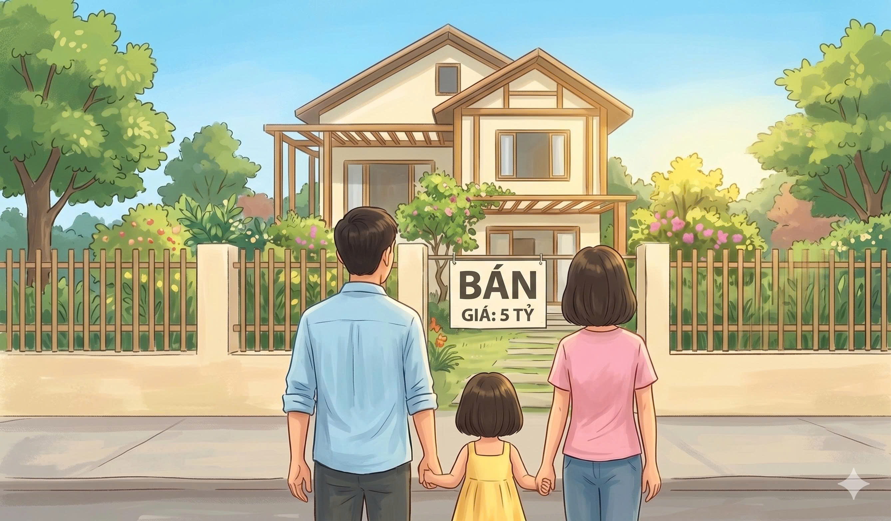
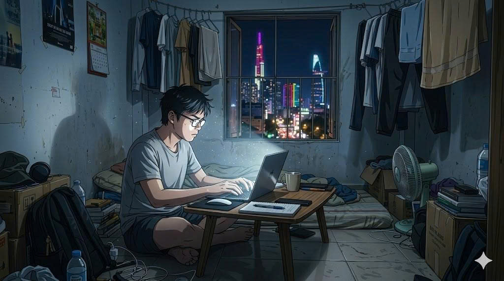

Với nhiều người trẻ, giấc mơ sở hữu một căn nhà tại các thành phố lớn đang ngày càng trở nên xa vời. Trong quý I/2026, giá căn hộ tại Hà Nội và Tp.HCM tiếp tục được ghi nhận ở mức cao, dao động từ 110-128 triệu đồng/m². Thị trường rơi vào tình trạng “kim tự tháp lộn ngược” khi phân khúc cao cấp chiếm tới 70-80% nguồn cung, trong khi nhà ở bình dân phù hợp với đa số người lao động có thu nhập trung bình lại ngày càng khan hiếm.
Con số ấy không phải là một phép tính giả định, mà là kết quả anh Lê Ngọc Phúc (25 tuổi, nhân viên logistics) tự rút ra sau nhiều đêm tính toán cho bài toán an cư tại Tp. HCM của mình.
Với thu nhập khoảng 15 triệu đồng mỗi tháng, Phúc hiện đang sống trong một phòng trọ nhỏ ở Bình Thạnh, chia sẻ tiền phòng 4,5 triệu đồng cùng hai người bạn khác. Từng nghĩ đến chuyện mua nhà, nhưng anh sớm nhận ra khoảng cách giữa mình và giấc mơ đó là quá lớn.
Để sở hữu căn hộ trị giá 4 tỷ, anh cần tới 40 năm tích lũy để mua được, còn nếu vay ngân hàng thì gồng không nổi tiền lãi hàng tháng. Giống như nhiều người trẻ khác, Phúc đang đứng trước những lựa chọn không dễ dàng: tiếp tục ở lại trung tâm thành phố với áp lực chi phí lớn, chuyển ra vùng ven để giảm chi phí sinh hoạt hoặc rời thành phố để về quê. “Với mức thu nhập hiện tại của mình, chuyện mua nhà ở Tp. HCM gần như không khả thi”, Phúc chia sẻ.
Đây không phải là câu chuyện của riêng Phúc, mà là thực tế chung của nhiều người trẻ khi giá nhà ngày càng vượt xa khả năng sở hữu của họ. Khoảng cách giữa thu nhập và giá nhà tại Việt Nam đang ngày càng bị nới rộng. Theo Chỉ số bất động sản mới nhất từ Numbeo, chỉ số “Price to Income” (Tạm dịch: Tỷ lệ giá nhà trên thu nhập) của Việt Nam đã tăng từ khoảng 23,9 lần vào năm 2015 lên hơn 30 lần vào đầu năm 2026. Điều này đồng nghĩa với việc một người lao động cần hơn 30 năm thu nhập để mua được nhà trong điều kiện không phát sinh bất kỳ khoản chi tiêu nào.
Tại các đô thị lớn như Tp. HCM, việc sở hữu một căn hộ đã vượt quá khả năng của đa số người trẻ. Với căn hộ có diện tích 60-70 m², giá thị trường dao động từ 2,5 đến 4 tỷ đồng, thậm chí lên mức 6-7 tỷ đồng ở khu trung tâm. Căn hộ với mức giá 2 tỷ đồng ngày càng khan hiếm, phần lớn là các căn diện tích nhỏ, cũ, đã xuống cấp hoặc căn hộ xa trung tâm. Trong khi đó, theo báo cáo của Cục Thống kê, thu nhập trung bình của người lao động năm 2025 là 9 triệu đồng mỗi tháng.
Những con số này thể hiện sự lệch pha ngày càng lớn giữa thu nhập và giá trị bất động sản. Khi giá nhà tăng nhanh hơn thu nhập, “an cư” không còn là một đích đến khả thi, mà trở thành một mục tiêu xa xỉ đối với nhiều người trẻ. Trước thực tế đó, người trẻ buộc phải điều chỉnh kỳ vọng và tìm kiếm những lựa chọn khác phù hợp hơn với khả năng tài chính của mình.
Trong bối cảnh áp lực lạm phát tăng cao và các dự án hạ tầng đang được đẩy mạnh, nhiều nhà đầu tư coi bất động sản là kênh trú ẩn an toàn và công cụ sinh lời hiệu quả. Đây là nguyên nhân chính khiến giá nhà vẫn cao phi lý dù thị trường bị đóng băng. Với một số người trẻ, lựa chọn thường thấy nhất vẫn là thuê nhà.
Gia nhập thị trường lao động đã được 9 năm, chị Lê Hà Linh (31 tuổi, kỹ sư chất lượng) cho rằng mua nhà là giấc mơ xa vời. Mức thu nhập 25 triệu/tháng của chị không thấp so với mặt bằng chung, nhưng chẳng thấm vào đâu với mức phí sinh hoạt đắt đỏ ở Tp. HCM. Sau khi trừ đi các khoản chi phí, có tháng chị tiết kiệm được 15 triệu, nhưng vẫn bấp bênh và không thể duy trì lâu dài. Do đó, chị Linh vẫn chọn thuê nhà vì không thể mua nổi.
Chị Linh cho biết nếu muốn mua một căn hộ có giá 3 tỷ thì phải có ít nhất 1,2 tỷ tích lũy và vay 1,8 tỷ, đồng nghĩa với việc chật vật trả nợ ngân hàng khoảng 16 triệu trong suốt 20 năm. “Tôi cảm thấy rất áp lực. Tôi muốn dành tiền để học hỏi, trải nghiệm nhiều hơn thay vì mua nhà và trả lãi đến năm 50 tuổi”, chị bày tỏ.
Trước thực tế đó, một lựa chọn khác cũng được nhiều người cân nhắc là tìm cách xê dịch ra vùng ven. Với mức thu nhập khoảng 40 triệu đồng mỗi tháng, vợ chồng anh Nguyễn Hữu Hưng (33 tuổi, nhân viên kinh doanh) kỳ vọng có thể mua một căn hộ nhỏ tại Tp. HCM. Tuy nhiên, khoảng cách khổng lồ giữa giá nhà và thu nhập khiến gia đình anh chưa đủ tự tin mua nhà.
Anh Hưng hướng đến việc mua nhà ở các khu vực ngoại thành như Bình Chánh, Nhà Bè, Cần Giờ, Dĩ An… bởi giá bất động sản ở những khu vực này vẫn còn dễ tiếp cận, hạ tầng ở các khu này cũng đang phát triển. Thế nhưng, việc lựa chọn khu vực phù hợp với các yếu tố như giá cả, tiện ích, khoảng cách đến chỗ làm là điều rất khó để cân bằng.
Dù bắt đầu tiết kiệm 10 triệu/tháng trong 7 năm, hai vợ chồng vẫn vô cùng thận trọng với kế hoạch tài chính. Trước đó, anh từng cân nhắc phương án vay ngân hàng, song trên thực tế, điều này sẽ trở thành áp lực tài chính. “Nếu vay khoảng 1-1.5 tỷ, mỗi tháng phải trả 13-16 triệu (gồm cả gốc và lãi), con số này chiếm phần lớn thu nhập, gần bằng hoặc vượt mức tiết kiệm hàng tháng của hai vợ chồng”, anh Hưng giải thích.
Vợ chồng anh Hưng vẫn chưa có kế hoạch sinh con dù đã kết hôn được 7 năm. Hai vợ chồng lo lắng việc đẻ con sẽ ảnh hưởng trực tiếp đến kế hoạch mua nhà: “Chi phí để nuôi một em bé tại Tp. HCM dao động từ 8-10 triệu đồng/tháng. Do đó, thời gian tích lũy sẽ kéo dài hơn hoặc buộc phải vay với áp lực cao hơn”. Bên cạnh áp lực tài chính, sinh con còn ảnh hưởng nhiều đến chất lượng sống: khối lượng công việc nhiều hơn trong khi thời gian dành cho giải trí, thư giãn của hai người vốn đã rất khiêm tốn.
Áp lực nhà ở cùng nhiều chi phí sinh hoạt hàng tháng khiến không ít người trẻ phải chật vật với cuộc sống ở thành phố. Giống như chị Linh và anh Hưng, nhiều người vẫn đang loay hoay với con đường an cư lập nghiệp của mình. Họ chấp nhận tối giản hết mức không gian sống, chuyển đến vùng ven cách xa chỗ làm để giảm chi phí.
Vấn đề cơm áo đè nặng lên vai người lao động, đặc biệt là người lao động trẻ, áp lực công danh - sự nghiệp ngày càng lớn trong khi cơ hội an cư ở thành phố lại ngày càng bị thu hẹp. Khi họ quá tải với khối áp lực đó, giấc mơ an cư lập nghiệp dần chuyển hướng từ phố về quê.
Sự dịch chuyển về quê như một cách để họ cân bằng lại nhịp sống hoặc tạm thời đưa họ thoát khỏi thực tại phũ phàng. Không gian sống thoải mái, chi phí sinh hoạt thấp, ít cạnh tranh, lại được ở gần gia đình là những lý do phổ biến. Không phải chen chúc nhiều người trong căn phòng trọ chật hẹp, có một mảnh vườn nhỏ để trồng rau nuôi cá, đó là cuộc sống đáng mơ ước trong tưởng tượng của nhiều người khi quyết định bỏ phố về quê. Tuy nhiên, sự thật không giống như mong đợi: đằng sau sự “dễ thở” là những giới hạn không phải ai cũng sẵn sàng đối mặt trong thời gian dài.
Anh Nguyễn Văn Tuấn (27 tuổi) từng là kỹ sư hệ thống thông tin, quyết định trở về quê với kỳ vọng sớm ổn định cuộc sống sau 7 năm vừa học vừa làm tại thành phố. Môi trường sống ở quê giúp anh thoải mái hơn với các khoản chi tiêu hàng tháng. Thay vì ở chung với 2 người khác trong căn phòng trọ 30 m² ở thành phố, giờ đây anh được gần gũi, chăm sóc gia đình. Tuy nhiên, sự khác biệt giữa hai môi trường lại khiến anh gặp không ít khó khăn. “Ở quê chi phí thấp hơn, cuộc sống nhẹ nhàng hơn, nhưng công việc đúng chuyên ngành gần như không có”, anh Tuấn chia sẻ. Từng đảm nhận nhiều vị trí đòi hỏi chuyên môn cao, anh Tuấn cho rằng phần lớn công việc tại địa phương không yêu cầu chuyên môn sâu, thiếu môi trường cạnh tranh và không có lộ trình phát triển rõ ràng. Mức lương thấp hơn khá nhiều buộc anh phải làm trái ngành để tự lo cho tương lai. Bên cạnh đó, cơ hội tiếp cận công nghệ hay các mối quan hệ trong ngành gần như rất ít - anh Tuấn bày tỏ.

Anh Nguyễn Văn Tuấn (27 tuổi) từng là kỹ sư hệ thống thông tin, quyết định trở về quê với kỳ vọng sớm ổn định cuộc sống sau 7 năm vừa học vừa làm tại thành phố.
Môi trường sống ở quê giúp anh thoải mái hơn với các khoản chi tiêu hàng tháng. Thay vì ở chung với 2 người khác trong căn phòng trọ 30 m² ở thành phố, giờ đây anh được gần gũi, chăm sóc gia đình.
Tuy nhiên, sự khác biệt giữa hai môi trường lại khiến anh gặp không ít khó khăn. "Ở quê chi phí thấp hơn, cuộc sống nhẹ nhàng hơn, nhưng công việc đúng chuyên ngành gần như không có", anh Tuấn chia sẻ.
Từng đảm nhận nhiều vị trí đòi hỏi chuyên môn cao, anh Tuấn cho rằng phần lớn công việc tại địa phương không yêu cầu chuyên môn sâu, thiếu môi trường cạnh tranh và không có lộ trình phát triển rõ ràng. Mức lương thấp hơn khá nhiều buộc anh phải làm trái ngành để tự lo cho tương lai. Bên cạnh đó, cơ hội tiếp cận công nghệ hay các mối quan hệ trong ngành gần như rất ít.
Những lựa chọn của người trẻ không đơn thuần là một quyết định cá nhân mà còn là mắt xích quan trọng nhằm tái cấu trúc đô thị và thị trường lao động. Theo công bố “Di cư nội địa Việt Nam giai đoạn 2009-2024” của Cục Thống kê vào tháng 12/2025, sự phân cực đang hiện rõ khi vùng Đông Nam Bộ vẫn là “thỏi nam châm” hút dân cư. Trong khi đó, vùng Đồng bằng sông Cửu Long gánh chịu áp lực xuất cư lớn nhất cả nước do thiếu hụt cơ hội việc làm và chi phí sinh hoạt tăng cao.
Hệ quả tất yếu của làn sóng này là tình trạng “chảy máu nhân lực trẻ”, khiến các đô thị lớn vừa thiếu hụt lao động trung cấp, vừa đối mặt với áp lực điều kiện hạ tầng mất cân bằng do giá nhà vùng ven tăng vọt. Dù đã có những tín hiệu tích cực về sự cân bằng dân cư tại miền Trung nhờ nỗ lực phát triển hạ tầng, nhưng sự suy giảm dân số trẻ tại các vùng xuất cư vẫn là bài toán nan giải. Tính chất phát triển vùng thiếu đồng đều này đặt ra yêu cầu cấp thiết về việc cân bằng lại nguồn lực lao động, nhằm giảm tải cho các trung tâm kinh tế và tạo động lực tăng trưởng bền vững cho các vùng ngoại vi.
Tuy nhiên, những hệ quả này không xuất phát từ lựa chọn cảm tính của người trẻ, mà bắt nguồn từ những vấn đề mang tính cấu trúc của thị trường. Thế hệ trẻ không hề kén chọn hay lười biếng. Họ vẫn sẵn sàng làm thêm giờ, nhận thêm dự án hay thử sức với nghề tay trái để tìm thêm cơ hội giữa guồng quay cuộc sống khắc nghiệt. Những người trẻ xa gia đình với khát vọng an cư, nhưng giấc mơ ấy lại đang bị ghì chặt bởi đà tăng “chóng mặt” của giá nhà đất.
Tại Diễn đàn đầu tư 2026, chuyên gia kinh tế Đinh Thế Hiển cho rằng hoạt động đầu cơ, lướt sóng là nguyên nhân đẩy giá nhà leo thang. Vào quý I năm 2026, giá bán sơ cấp tại Hà Nội đã lập đỉnh mới với mức trung bình khoảng 104 triệu/m², giá căn hộ ở vùng ven cũng chạm ngưỡng 70 triệu đồng/m². Ở Tp. HCM, giá căn hộ sơ cấp tăng từ 35 triệu lên hơn 100 triệu/m² chỉ trong 8 năm (2018-2026), tăng khoảng 14%/năm. Trong khi đó, thu nhập bình quân đầu người chỉ tăng khoảng 6-7%/năm. Khi thu nhập của người lao động tăng không đủ “nhanh” để kịp chạy theo giá nhà, cơ hội an cư của người trẻ tại các thành phố lớn ngày càng xa tầm với.
Ông Võ Huỳnh Tuấn Kiệt - Giám đốc Bộ phận Tiếp thị dự án nhà ở CBRE Việt Nam - đã chia sẻ tại buổi họp báo Tổng quan thị trường bất động sản Việt Nam quý IV/2025: đà tăng của bất động sản chủ yếu đến từ cơ cấu nguồn cung. Hơn 50% nguồn cung mới trên thị trường thuộc phân khúc cao cấp và hạng sang, với mức giá trung bình trên 120 triệu đồng/m². Trong khi đó, ở phân khúc thấp hơn, nhà ở xã hội lại đang trong tình trạng “cung không đủ cầu”. Ông Bùi Xuân Cường - Phó Chủ tịch UBND Tp. HCM cho biết, đến năm 2030, tổng nhu cầu nhà ở xã hội của Tp. HCM là 974.000 căn. Con số này cao hơn rất nhiều so với chỉ tiêu hoàn thành khoảng 199.400 căn nhà ở xã hội.
Thị trường đang bị chia đôi: căn hộ cao cấp cho người có thu nhập cao, nhà ở xã hội cho người có thu nhập thấp. Điều này đặt ra thêm một dấu chấm hỏi: vậy người có thu nhập trung bình, không quá thấp nhưng chưa giàu sẽ mua nhà ở đâu?
Theo Chỉ số bất động sản mới nhất từ Numbeo năm 2026, chỉ số “Price to Income” (Tỷ lệ giá nhà trên thu nhập) của Việt Nam đã vọt lên mức 30,2, chính thức đưa nước ta lọt vào nhóm 10 quốc gia khó mua nhà nhất thế giới. So với con số 27,6 vào năm 2025, hai chữ “an cư” ngày càng xa vời đối với người trẻ.
Tại hội thảo “Nhận định thị trường Bất động sản 2026: Dòng tiền nhà đầu tư chảy vào phân khúc nào?”, TS. Cấn Văn Lực - Chuyên gia Kinh tế trưởng Ngân hàng TMCP Đầu tư và Phát triển Việt Nam (BIDV) nhấn mạnh, việc đưa giá bất động sản về mức hợp lý không còn là vấn đề nên hay không nên, mà là yêu cầu bắt buộc nếu muốn thị trường phát triển bền vững.
Nếu với thế hệ đi trước, “an cư” gắn liền với mảnh đất, căn nhà, thì với người trẻ ngày nay, khái niệm này đã dần trở thành một “trạng thái”. Hai chữ “an cư” chỉ thực sự trọn vẹn khi họ tìm thấy sự cân bằng giữa vật chất đủ đầy và tinh thần thoải mái. Đó là khi họ có thể trút bỏ gánh nặng nợ nần kéo dài nửa đời người để mua nhà, là thôi phải sống “tạm” nhiều năm ở thành phố để tìm kiếm cơ hội. Cũng có thể, đó là lúc mà người trẻ có thể vừa tìm thấy niềm vui trong công việc, lại vừa vặn lo toan cơm, áo, gạo, tiền. Với họ, “an cư” không chỉ nằm ở diện tích căn hộ hay tấm sổ đỏ đứng tên mình, mà còn ở quyền tự do lựa chọn cách sống - tự làm chủ hành trình của chính mình giữa lòng phố thị.
Sau tất cả, anh Phúc, chị Linh, anh Tuấn hay vợ chồng anh Hưng và mỗi người trẻ khác đều phải cân nhắc và đưa ra sự lựa chọn cho riêng mình. Thay vì mải miết theo đuổi một tư duy đã cũ, người trẻ cần tỉnh táo để đưa ra quyết định phù hợp nhất với nhu cầu và năng lực thực tế của chính mình. Còn bạn, giữa bối cảnh giá nhà “leo thang”, bạn chọn bám trụ thành phố, dịch chuyển ra ngoại ô hay trở về quê nhà?